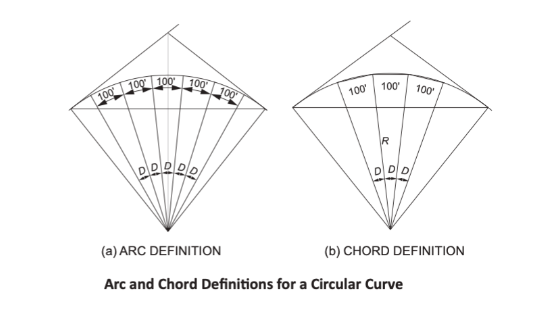
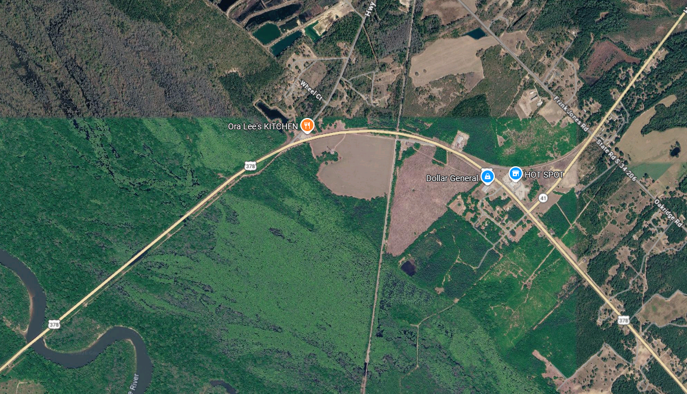
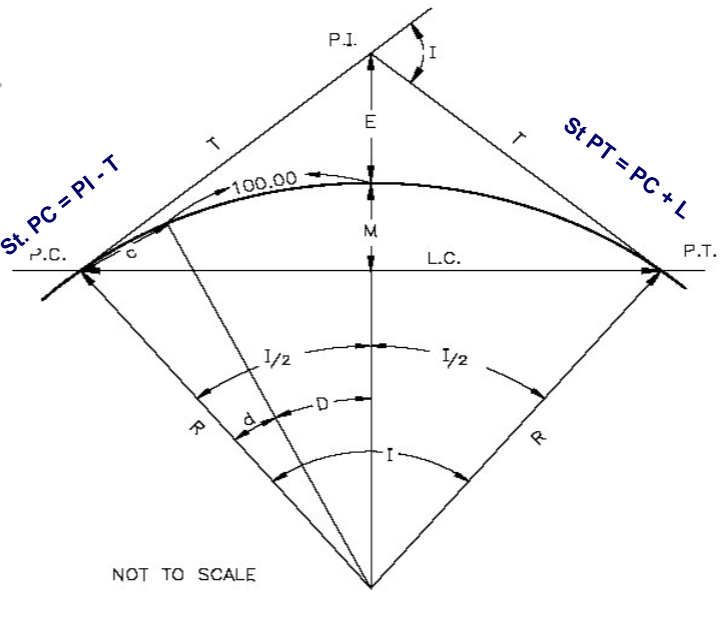
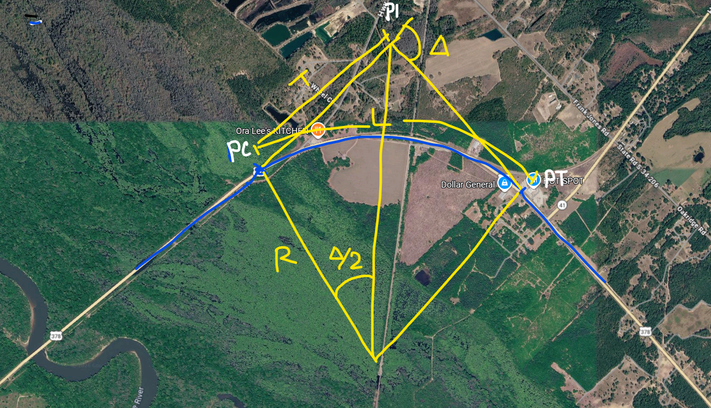
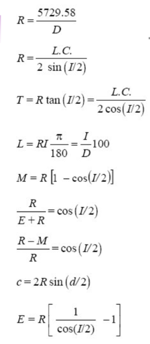
Two tangent lines meet at station 32 + 15. The radius of curvature is 1200 feet, and the angle of deflection is 14 degrees. Find the length of the curve, the stations for the PC and PT and all other relevant characteristics of the curve (LC, M, E).
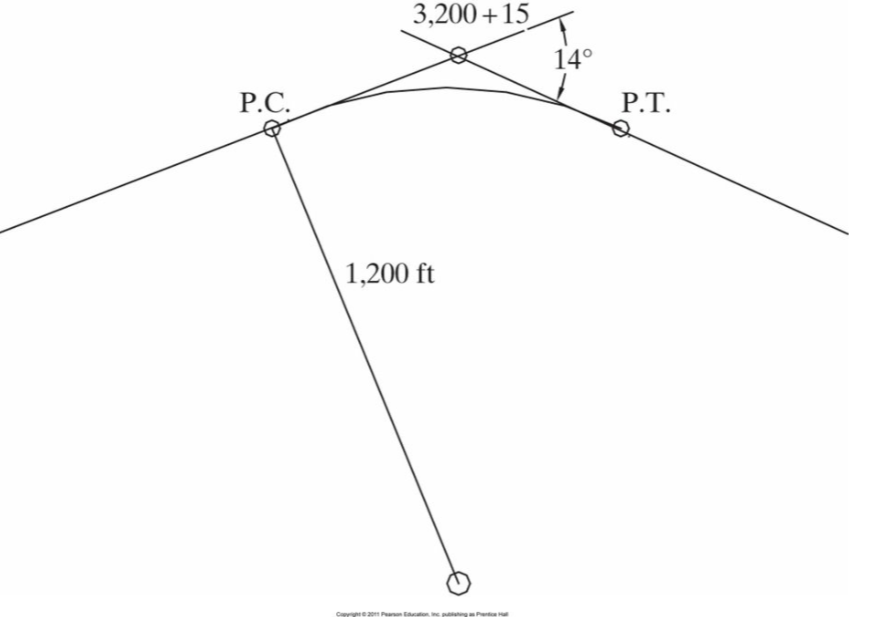
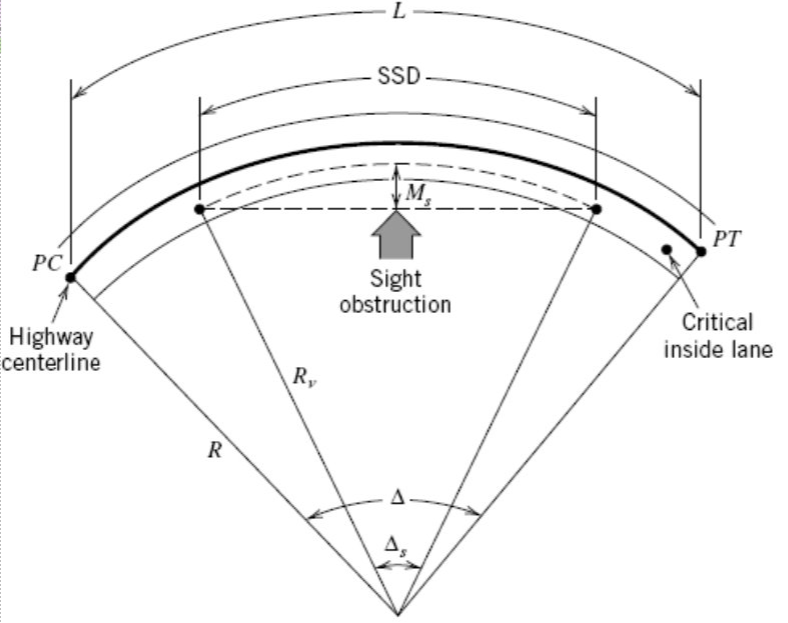
A 6 degree curve (measured at the centerline of the inside lane) is being designed for a highway with a design speed of 70 mi/hr. The grade is level, and driver reaction time is 2.5 seconds. What is the closest any roadside object may be placed to the centerline of the inside lane of the roadway?
For a SSD of \(726.6ft\), the min clearance at roadside:
Amount by which the outer edge of a curve on a road or railroad is banked above the inner edge.
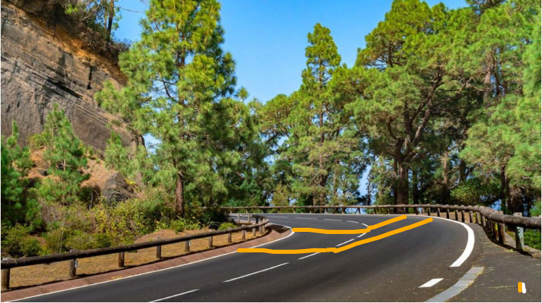
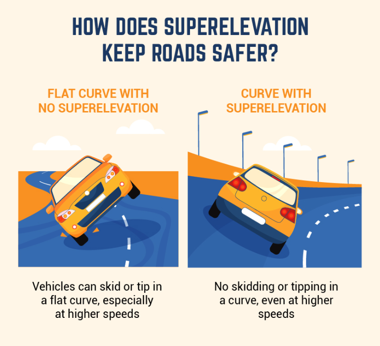
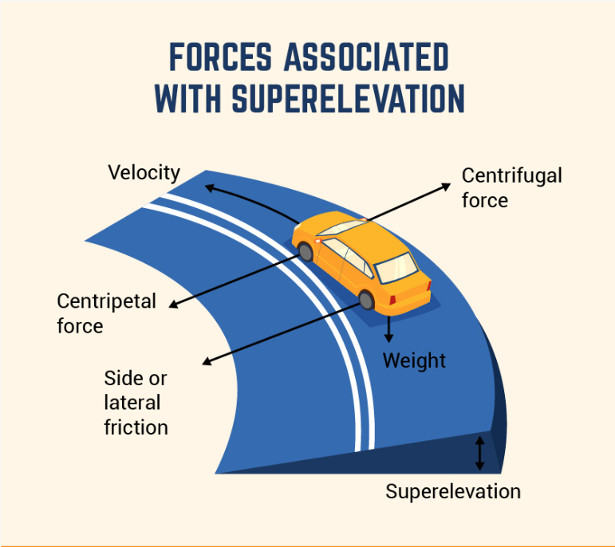
https://www.bigrentz.com/blog/superelevation
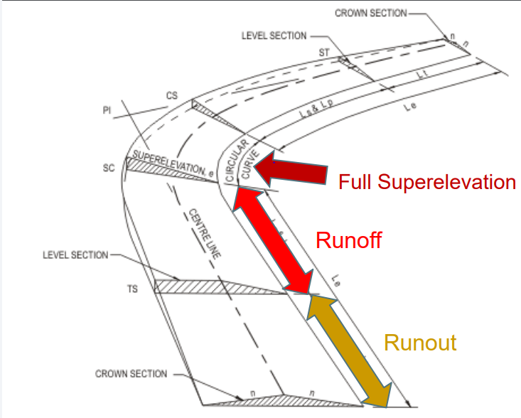
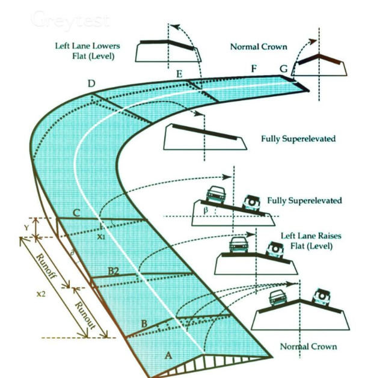
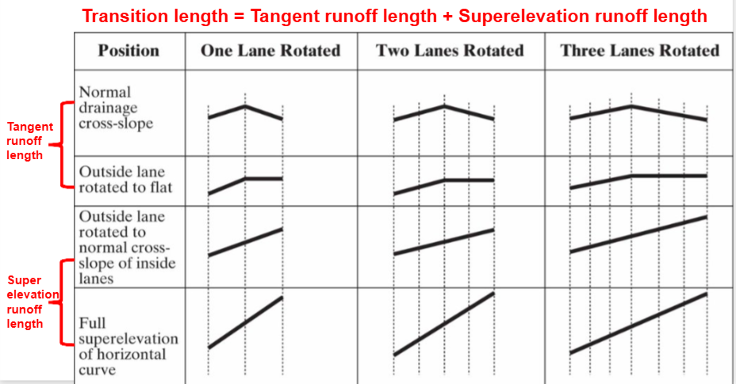
\(L_r = \frac{w \times n \times e_d \times b_w}{\Delta}\)
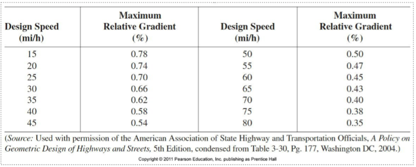
\(L_t = \frac{e_{NC}}{e_d} \times L_r\)
A four-lane highway with a superelvation rate of 0.04 achieved by rotating two 12 ft lanes around the centerline. The normal drainage cross-slope is 0.01. The design speed of the highway is 60 mi/h. What is the appropriate minimum length of superelevation runoff and what is the tangent runoff length.